Communicative Data Visualization
An exploration of how I tell stories with data visualization languages and theories.
View projectOverview
Time
2 weeks, Nov. 2020
Role
Solo Designer and Developer
Status
Published on Github
Methods & Tools
Methods
Sketches, Competitor analysis
Tools
Altair, Vega-lite, Idyll, Tableau
Design Prompt
Norway is successful in the Winter Olympics. Why is that and how to communicate their success?
Solution
A one-page scrolling interactive visualization to explain the potential reseasons for Norway's success and a static infographic visualization for different channels.
Static Infographic
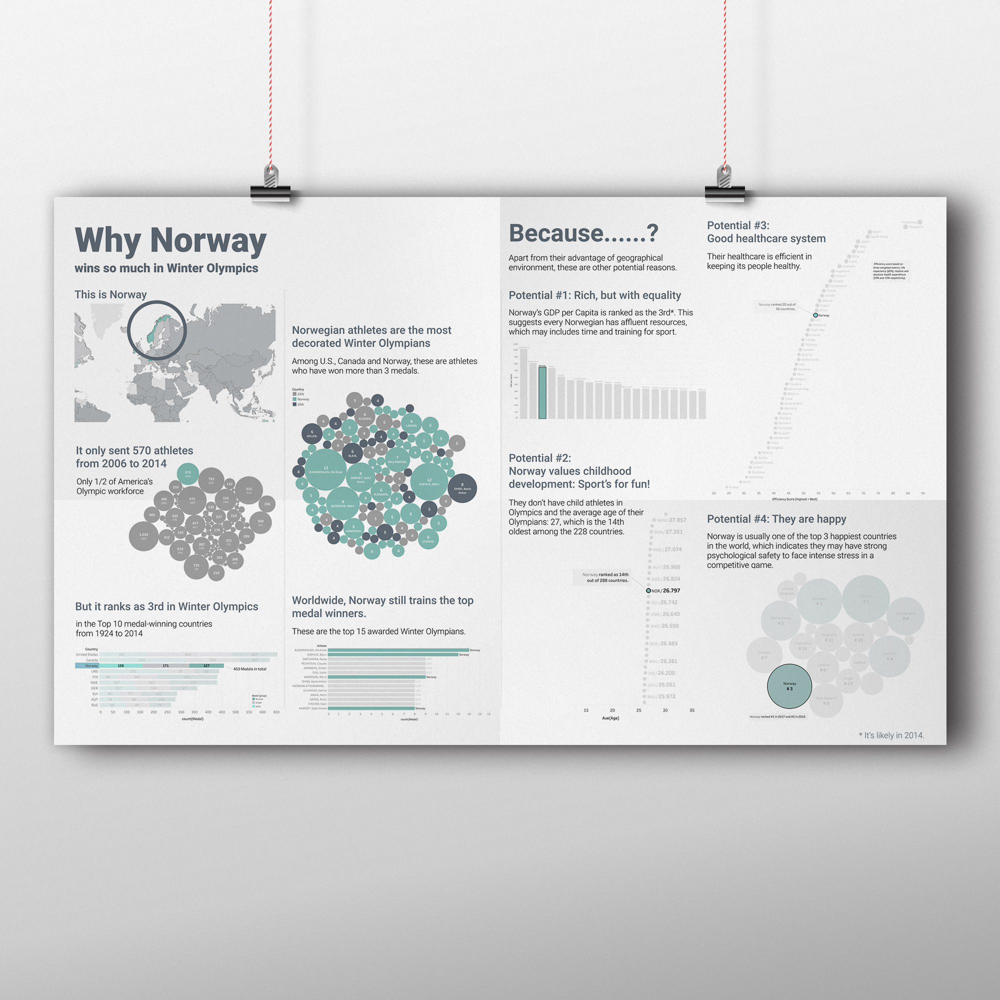Interactive Webpage
View projectResearch
In the beginning of the research phase, I spent lots of time finding different news reports on Norway’s success in the Winter Olympics. The purpose of browsing different news coverage is to avoid bias from one channel and also to find patterns among different news pieces. In this phase, I also explored different datasets on Kaggle about the Olympics just to get myself familiar with the process of finding datasets myself and browse potential datasets to be used. At the end of the research phase, a clear path toward the project has emerged, which is about a story to tell the success of Norway’s sports culture and their stunning performance in the Winter Olympics.
In the peer feedback, I showed my teammates a diagram of my storytelling plan, and their feedback helped me to reflect more about building the connection between each visualization. Finally, the last takeaway I got from this phase is the datasets (Appendix 3) I want to collect to prove Norway’s success in sports culture. I was originally thinking about datasets on income and happiness. However, I realized I may need to gather more well-rounded proves.
Static Infographic
1. Ideation
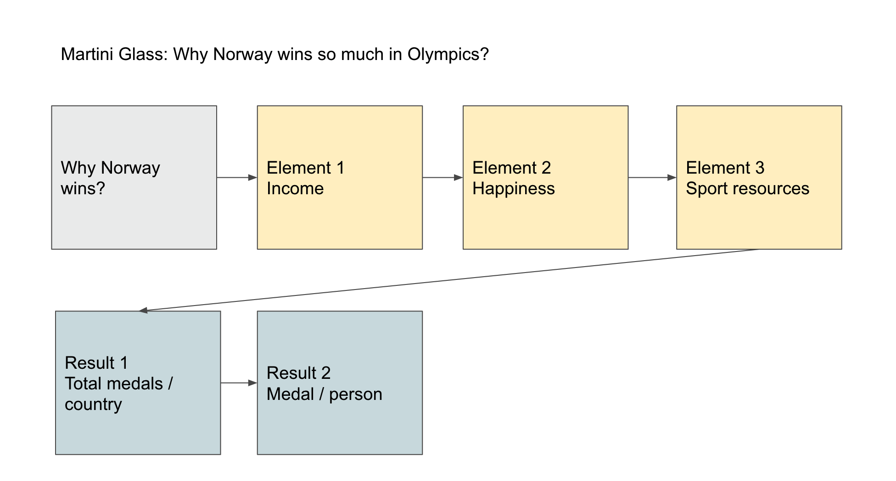 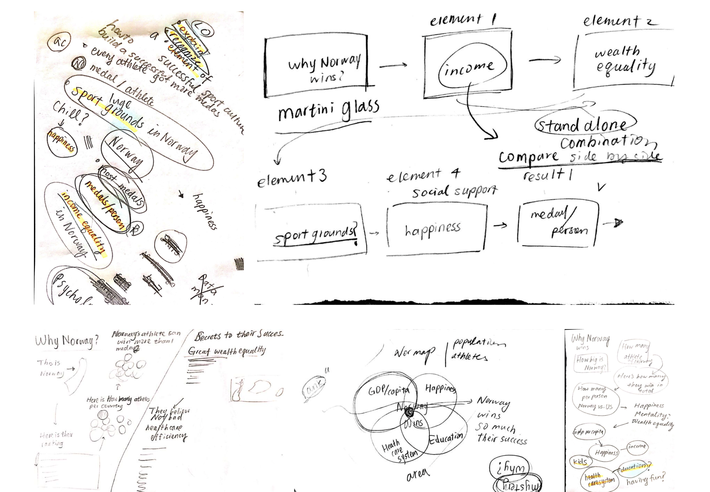I decided to start from a high-level overview of how I want to tell the story. I first drew sketches about the scaffold of the story and I realized that I wanted to use the narrative model of Martini Glass because the model closely caters to the two learning objectives I have settled on so far: I want the viewers to walk away clearly knowing Norway’s secrets to success in the Winter Olympics.
2. Iterations
Phase 1: visualization movement and layout
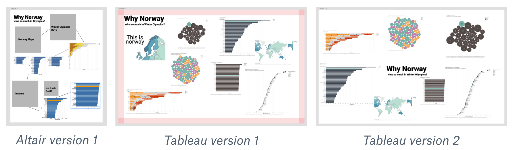The three visualizations above were the very first designs when I was just trying to play with the datasets I collected. I didn’t think of the design as a whole when I was immersed in each chart. However, I decided to redesign the color scheme after I put all of the charts together for a more consistent experience. In this phase, I was also experimenting with the layout of the whole visualization. Questions I asked myself in the phase include how I can guide viewers to follow the visual cue, which placement is more effective than the other.
Phase 2: data visualization variations and data ink ratio
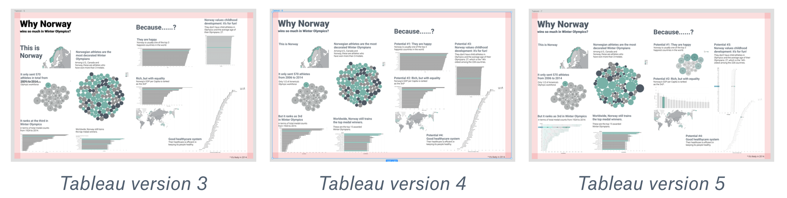The three visualizations showed my path in experimenting with the color and different types of charts. I found out I used too many bar charts, which makes the whole visualization heavy. At the same time, those bar charts don’t have great data ink ratio, according to Tufte’s principle, while the important information is not salient enough to be discovered.
Phase 3: details and variations on the layout
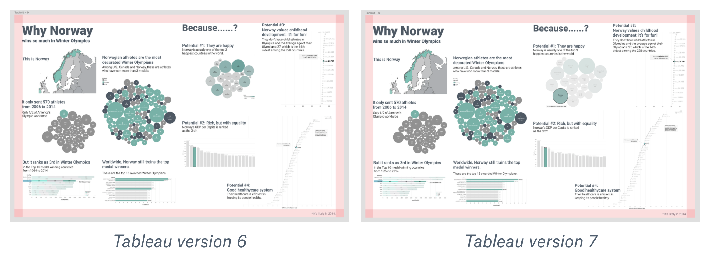 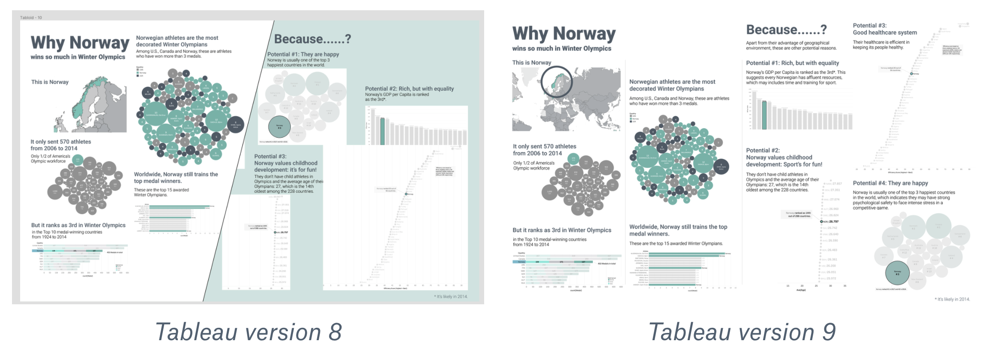In the final phase, I mainly focused on the details of each chart in order to make every chart as easy to process as possible. I also tried to use a more defined layout (version 8) with different background colors. However, I decided not to proceed with that idea because I haven’t figured out how to make the exported images from Tableau transparent.
Design Decisoin

Interactive Visualization
1. Ideation
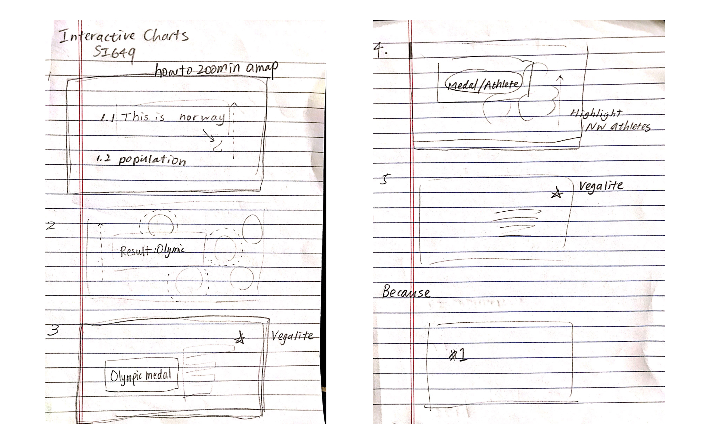I decided to build the interactive version based on the static visualization to turn the narrative more into a story through the interactive technique we have learned in the class.
Based on the narrative of my visualization, I decided to use Idyll as my interactive tool because I found the design options Idyll provides is more cohesive to the nature of the story I want to tell than other languages or tools. Especially when I adopted the Martini Glass narrative model, the one-page scrolling feature and Scroller components from Idyll can further facilitate the interactive storytelling of my visualization.
2. Inspiration from other works

The following are some inspirations I saw from other visualizations. One is from Dremio elaborating on interesting stats from Winter Olympics, the other one is from NYC Data Science Academy on Olympics visualization in general.

Other inspirations I admire but didn’t adopt include one from Visual Cinnamon, who used D3.js to represent medals of different countries. I didn’t apply the inspiration mostly because of technical constraints –– I don’t know how to replicate this visualization in Vega-Lite or Altair.
3. Iterations
The three visualizations above were the very first designs when I was just trying to play with the datasets I collected. I didn’t think of the design as a whole when I was immersed in each chart. However, I decided to redesign the color scheme after I put all of the charts together for a more consistent experience. In this phase, I was also experimenting with the layout of the whole visualization. Questions I asked myself in the phase include how I can guide viewers to follow the visual cue, which placement is more effective than the other.
Phase 1: Turn the Tableau table into Altair and Vega-Lite
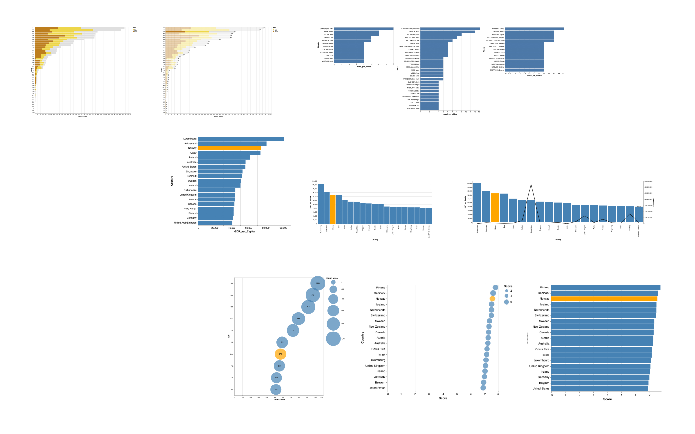In the first phase, I turned the original Tableau charts into Vega-Lite charts through Altair. At this phase, some constraints I met include the infeasibility of some visualization techniques in Altair that was available in Tableau, my ability and insufficient time to explore all of the possible options in Altair.
Phase 2: Structure of the narrative in Idyll
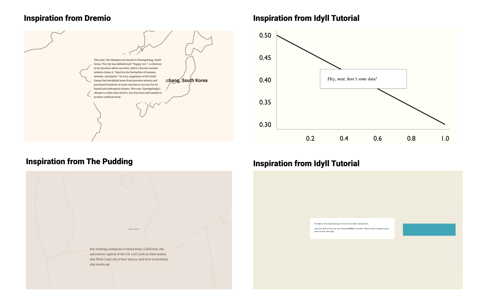In this phase, I was getting myself familiar with Idyll language and its components. After a bit of exploration, I decided to use Scroller as the main components to display the narratives to make information about every chart and its connection digestible and engaging. The benefit of using Scroller from Idyll is its exclusive focus on the contents so that it’s easier for the author to guide the attention of viewers or users to the current point of the narrative, which also corresponds to the Martini Glass model of my narrative.
Phase 3: Adding Interactions to Vega-Lite chart
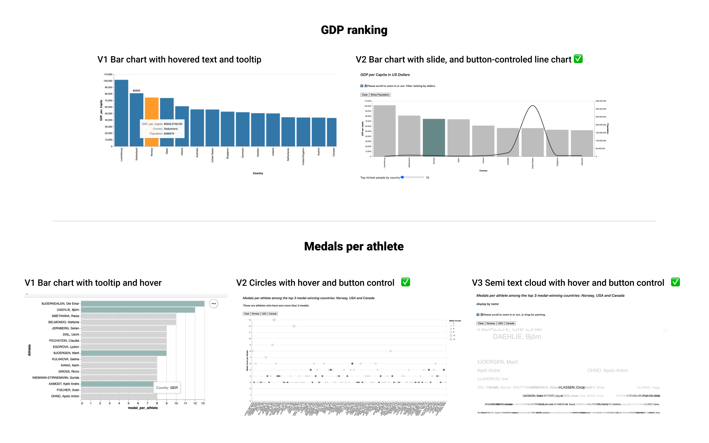In this phase, I was trying to add meaningful interactions to the Vega-Lite chart to compensate for the leading tone of the single-way narrative that I made with Scroller. To achieve my learning objective, I tried to make the interaction fun to enhance users’ impression. For example, in the following chart, I ask users to click the buttons to check how many of the athletes are Norwegian, American and Canadian. However, users will find out there are actually zero Canadian in the top 15 medal-winning athletes.
Design Decision
I settled on the final version after several rounds of self-review and a few feedback from friends who have information visualization-related backgrounds. With the final version, I want to achieve the following criteria: expressive, effective, enjoyable and understandable. The current interactive version has ample conversational narratives as a supplement to effectively help viewers and users to understand the learning objective of the whole visualization. At the same time, I provided several different charts to let users interact with and explore around the topic, which expressively helps users learn more about Norway’s performance and secrets to success.
With a large number of full-page images of Norway as a background and informative narration on the top, the whole viewing process is more understandable and immersive than only displaying the charts. Also, each section is composed of supporting charts and full-page scroller with explanatory narrative, so that the information is divided as a bite-size level with transitions, which I hope will make the whole viewing experience more enjoyable and interesting. Finally, as for the charts, the exploratory interactions I added are meant to help users to find out interesting facts about Norway so that the learning objective can be more memorable. For example, the slider is helping users to see where Norway is ranked among hundreds of countries, or the buttons are allowing users to quickly compare Norway’s performance with other top medal-winning countries.


{kind=link}
{kind=link}
{kind=link}
{kind=link}
{kind=link}
{kind=link}
{kind=link}
{kind=link}